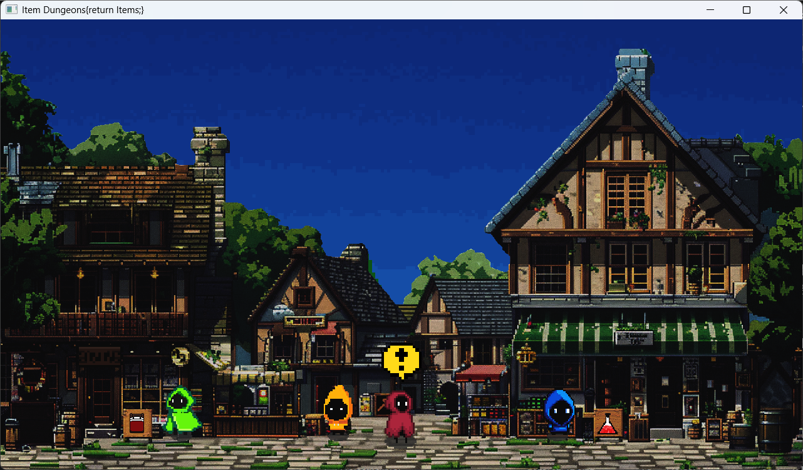
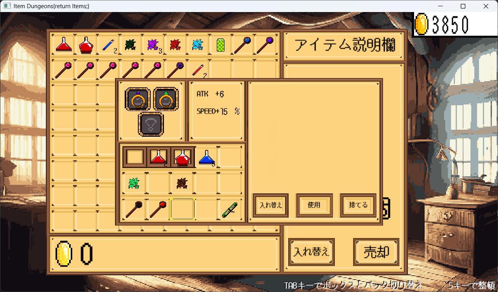
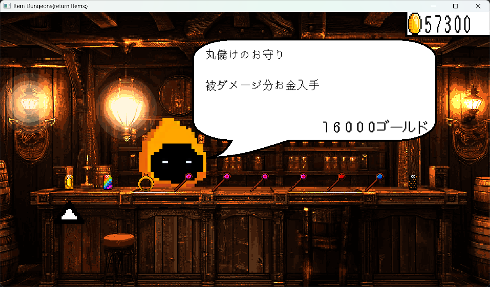

ホーム画面・UI
ゲームの開始時に利用するホーム画面や、ゲーム内で使うUIの実装を担当。
01 — OVERVIEW
1年次にチームで制作したローグライクゲームです。チーム内で役割を分担し、私はホーム画面やゲーム内UIの実装を担当しました。
実装作業に加えて、ゲームのアイデア出しや制作進捗の確認にも参加し、メンバーと相談しながら完成を目指しました。制作チームの中から上位5チームに選ばれ、発表の機会を得ました。
02 — CONTRIBUTIONS
ゲームの開始時に利用するホーム画面や、ゲーム内で使うUIの実装を担当。
ゲーム内容や改善案について、チームメンバーと意見を出し合った。
制作状況を確認し、メンバー同士で認識を合わせながら作業を進めた。
03 — WHAT I LEARNED
チーム制作では、自分の担当箇所を実装するだけでなく、全体の進捗や他のメンバーの作業状況を共有し、認識を合わせることが大切だと学びました。
実際に担当した部分の画像



04 — EXPLORE MORE